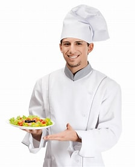

OBVIOUSLY FOOD IS ONE OF MY GREATEST PASSIONS IN LIFE, BUT I SUPPOSE THERE IS A LITTLE MORE TO ME THAN
JUST FOOD.
About me
My name is khan. I am a Chef and I’ve been cooking for over 10+ years professionally. I am also the
owner of Philly’s two best Korean restaurants, serving more than 300 people per day.
During the Pandemic, I decided to share all my recipes online which ended up going viral. Now, here I am
sharing my Korean culture and doing exactly what I love, and was doing, at the Restaurant with
everybody!